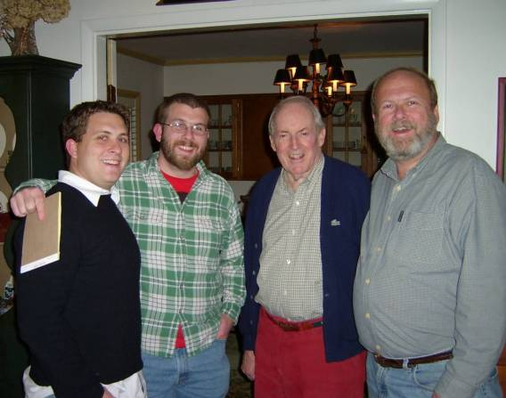

|
|
Basil Etherton Moore, Jr was born to Mr. & Mrs. Basil E. Moore, Sr. He attended Annapolis High School, graduating in 1942. Basil then went to St. John's College for a year before joining the army to fight the Nazis. At 19 he was one of the youngest in the Maryland National guard unit he joined. Basil landed the 2nd day (D+1 Day) on the Normandy beach and fought into Germany. When he returned home he switched schools attending the University of Maryland were he got his J.D. and then became a lawyer. He got married and had several children. He was then widowed. |
| Then in 1995 Basil found love again, marrying the widow Ruth Marshall on 29 September. They enjoyed a very social life in Severna Park until Ruth died in 2005. Later that year Basil had a stroke when arterial plaque, dislodged during heart surgery, found it's way into his brain. |

|